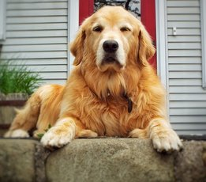

De golden retriever is al tientallen jaren zo in trek, dat het bijna vreemd is hoe weinig er over de herkomst van het ras bekend is. Golden retrievers zijn erg populaire gezinshonden, maar toch ligt hun oorsprong in de jacht, bij de Schotse adel. Anders dan veel andere jachthonden zijn golden retrievers speciaal gefokt om aangeschoten wild op te sporen voordat het weg kon vluchten (‘Retrieve’ is Engels voor ‘ophalen’). Daarvoor was een slimme hond nodig met een dikke, warme vacht, uitstekende zintuigen en een speels karakter, waardoor ze bijvoorbeeld graag een riviertje over zwemmen om de prooi op te sporen. Golden retrievers moesten een haas of hert ook apporteren, waarbij hun vermogen om dieren of speeltjes zacht maar stevig tussen hun tanden te klemmen – de ‘zachte beet’ – perfect van pas komt.
